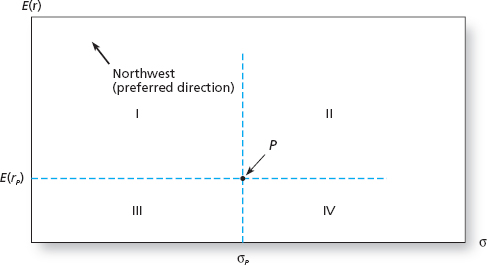
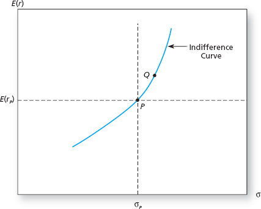
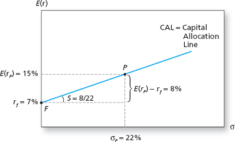
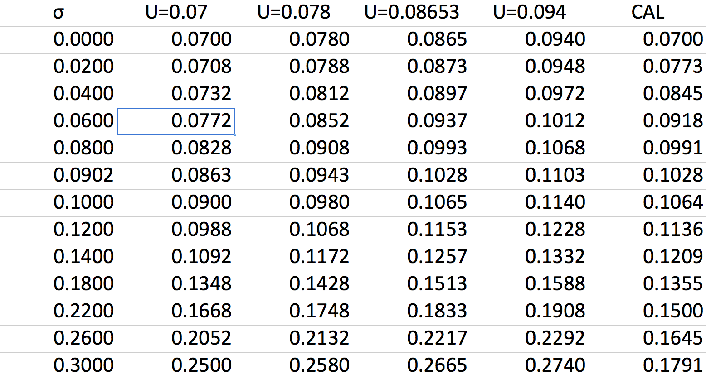
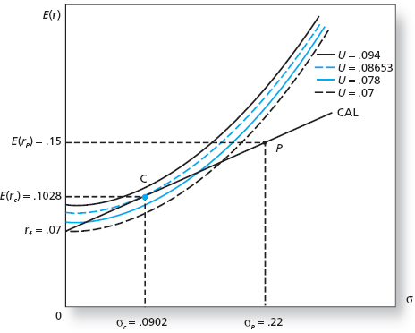

Asset Allocation
Utility
Investors usually care about maximizing utility.
- Suppose all investors have utility function
\[\begin{split}U(\mu, \sigma) & = \mu - \gamma \sigma^2.\end{split}\]
- \(\mu\) and \(\sigma\) are the mean and standard deviation
of asset returns.
- What is the utility of holding a risk-free asset \(U(\mu_f,
\sigma_f)\)?
\[U(\mu_f ,\sigma_f) = r_f.\]
Certainty Equivalent
For a risky portfolio, \(U(\mu_f, \sigma_f)\) can be thought of as
a certainty equivalent return.
- The return that a risk-free asset would have to offer to provide the
same utility level as a risky asset.
Risk Aversion
The parameter \(\gamma\) is a measure of risk
preference.
- If \(\gamma > 0\) individuals are risk averse - volatility
detracts from utility.
- If \(\gamma = 0\) individuals are risk neutral - volatility
doesn’t enter into the utility function.
- In this case, investors rank portfolios by their expected return
and don’t care about portfolio riskiness.
Risk Aversion
- If \(\gamma < 0\) individuals are risk lovers - volatility is
rewarded in the utility function.
- In this case, investors enjoy and get utility by taking on risk.
- We will generally assume investors are risk averse, with the
magnitude of \(\gamma\) dictating the amount of risk aversion.
Mean-Variance Criterion
Under this utility model, investors prefer higher expected returns
and lower volatility.
- Let portfolio \(A\) have mean and volatility \(\mu_A\) and
\(\sigma_A\).
- Let portfolio \(B\) have mean and volatility \(\mu_B\) and
\(\sigma_B\).
- If \(\mu_A \geq \mu_B\) and \(\sigma_A \leq
\sigma_B\), then \(A\) is preferred to \(B\).
Mean-Variance Criterion
\(\qquad\)

Indifference Curves
Portfolios in quadrant I are preferred to \(P\), which is preferred to
portfolios in quadrant IV.
- What about quadrants II and III?
- If a portfolio \(Q\) has a mean and volatility that differ from
\(P\) but yields the same utility level, then either
\[\begin{split}\mu_Q > \mu_p \text{ and } \sigma_Q > \sigma_p\end{split}\]
or
\[\begin{split}\mu_Q < \mu_p \text{ and } \sigma_Q < \sigma_p.\end{split}\]
- That is, Q must be in quadrants II or III.
Indifference Curves
- The portfolios that yield the same utility as \(P\) constitute
an indifference curve.
- We conclude that the indifference curve must cut through quadrants
II and III.
Indifference Curve Plot
\(\qquad\)

Portfolios of Assets
Suppose an individual can invest in two assets: a risky portfolio
\(P\) and a risk-free asset \(F\).
- \(\omega\) will be the fraction wealth invested in
\(P\).
- \(1-\omega\) will be the fraction wealth invested in
\(F\).
- We will typically assume that portfolio weights sum to
1.
- \(r_p\) will denote the return on asset \(P\), with
\(\mu_p = E[r_p]\) and \(\sigma_p^2 = Var(r_p)\).
- \(r_f\) will denote the return on asset \(F\), with
\(\mu_f = r_f\) and \(\sigma_f^2 = 0\).
Portfolio Return
Let \(C\) denote the portfolio that combines the two assets.
- \(C\) is a weighted average of \(P\) and \(F\):
\[C = \omega P + (1-\omega) F.\]
\[r_c = \omega r_p + (1-\omega) r_f.\]
Portfolio Return
By the linearity of expectations:
\[\mu_c = E[r_c] \qquad \qquad \qquad\]
\[\quad \enspace \, = \omega E[r_p] + (1 - \omega)E[r_f]\]
\[= \omega \mu_p + (1-\omega) r_f \enspace \,\]
\[= r_f + \omega(\mu_p - r_f). \enspace \,\]
- The term in the parentheses is the risk premium of \(P\).
Portfolio Volatility
According to the properties of variance,
\[\sigma^2_c = Var(r_c) \qquad \qquad \qquad \qquad \qquad \qquad
\qquad \qquad \enspace\]
\[\quad \enspace \; \, = \omega^2 Var(r_p) + (1 - \omega)^2 Var(r_f) + 2
\omega (1 - \omega) Cov(r_p, r_f)\]
\[= \omega^2 Var(r_p) \qquad \qquad \qquad \qquad \qquad \qquad
\quad \enspace \; \: \,\]
\[= \omega^2 \sigma^2_p. \qquad \qquad \qquad \qquad \qquad \qquad
\qquad \quad \enspace \; \,\]
- The third equality follows because \(r_f\) is a constant.
\[\sigma_c = \omega \sigma_p.\]
Portfolios and Risk Aversion
Portfolio \(C\) earns a base return of \(r_f\) plus the risk
premium associated with \(P\), weighted by the amount of wealth
the investor allocates to \(P\).
- More risk averse investors (small \(\omega\)) expect a rate of
return closer to \(r_f\).
- Less risk averse investors (high \(\omega\)) expect a rate
closer to \(\mu_p - r_f\).
- More risk averse investors have smaller portfolio volatilities.
- Less risk averse investors have higher portfolio volatilities.
Portfolio Weight
Since \(\sigma_c = \omega \sigma_p\),
\[\omega =\frac{\sigma_c}{\sigma_p}.\]
Sharpe Ratio
Thus
\[\mu_c = r_f + \omega (\mu_p - r_f) \qquad\]
\[= r_f + \frac{\sigma_c}{\sigma_p} (\mu_p - r_f) \:\]
\[= r_f + \frac{\mu_p - r_f}{\sigma_p} \sigma_c \enspace \; \,\]
\[= r_f + \text{SR}_p \sigma_c. \qquad \enspace\]
- \(\text{SR}_p\) is the Sharpe Ratio of portfolio \(P\).
Capital Allocation Line
The Capital Allocation Line (CAL) depicts the set of portfolios
available to an investor (a budget constraint).
- It plots pairs of \(\sigma_c\) and \(\mu_c\) that the
investor can choose by selecting \(\omega\).
- This is simply a plot of the equation
\[\mu_c = r_f + \text{SR}_p \sigma_c.\]
- Clearly, the intercept will be \(r_f\) and the slope will be
\(\text{SR}_p\).
Capital Allocation Line Example
Suppose
What is the CAL?
Capital Allocation Line Plot
\(\qquad\)

Simple Portfolio Choice
Individuals seek to maximize utility subject to the available choice
set.
\[\max_{\mu_c, \sigma_c} U(\mu_c, \sigma_c) = \max_{\mu_c, \sigma_c}
\mu_c - \frac{1}{2} \gamma \sigma^2_c,\]
subject to
\[\begin{split}\mu_c & = r_f + \omega (\mu_p - r_f) \\
\sigma_c & = \omega \sigma_p.\end{split}\]
Simple Portfolio Choice (Cont.)
Substituting the constraints, the maximization problem becomes
\[\max_{\omega} \left\{r_f + \omega (\mu_p - r_f) - \frac{1}{2}
\gamma \omega^2 \sigma^2_p \right\}.\]
Taking the derivative of this equation w.r.t. \(\omega\),
\[\mu_p - r_f = \gamma \omega^* \sigma^2_p\]
\[\Rightarrow \omega^* = \frac{\mu_p - r_f}{\gamma \sigma^2_p} =
\frac{\text{SR}_p}{\gamma \sigma_p}.\]
Simple Portfolio Choice
Since the CAL is a choice set (budget constraint), we can find the
optimal portfolio by observing where an indifference curve is
tangent to the CAL.
- Fix the utility value at \(\bar{U} = r_f\).
- Use the relation \(\bar{U} = \mu_c - \frac{1}{2} \gamma
\sigma^2_c\) to solve for \(\mu_c\):
\[\mu_c = \bar{U} + \frac{1}{2} \gamma \sigma^2_c.\]
Simple Portfolio Choice
- Using this equation, we find the pairs of \(\mu_c\) and
\(\sigma_c\) that corresponds to utility \(\bar{U}\), which we
plot.
- Repeat this process, increasing the values of \(\bar{U}\) until a
tangent indifference curve is found. The tangency corresponds to
the optimal portfolio.
Spreadsheet Optimization
Given \(\gamma=2\), \(\mu=0.15\), \(\sigma=0.22\) and
\(r_f=0.07\).
\(\qquad\)

Graphical Optimization
\(\qquad\)

Capital Market Line
Consider a value-weighted portfolio of all assets in the
market.
- We will call this the market portfolio and denote it by
\(M\).
- The CAL which connects \(r_f\) with \(M\) is called the
Capital Market Line (CML).
- Because the true market portfolio is unobserved, we use a
proxy - a well diversified portfolio that provides a good
representation of the entire market.
- Typically we use the S&P 500.
Passive vs. Active Strategies
Holding the market portfolio or a market proxy is known as a passive
strategy.
- It requires no security analysis.
- An active strategy is one that requires individual security
analysis.
{kind=link}
{kind=link}
{kind=link}
{kind=link}
{kind=link}